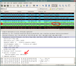

This is a follow-up to debian bug #541658 for Iceweasel: “cannot open research.microsoft.com”.
It turned out that this bug applies to all (tested) browsers with cookie-support (Iceweasel, Opera, Chrome, Arora, Kazehakase),
but only very few people are experiencing it.
First I’ll tell how to reproduce the bug, then I’ll sum up the facts I already
collected in that bugreport and then I’ll document my further attempts to narrow down the problem.
UPDATE: The reason for that strange behaviour was found and I filed a new bugreport:
No. #587789
UPDATE 2: Debians Kernel maintainer considers this expected behavior and told me
to file a bugreport upstream and I did: Netfilter bug #622.
UPDATE 3: I think Microsoft has fixed their server. Of course the Linux kernel
should be fixed anyway but there doesn’t seem to be much interest in doing so :-/
UPDATE 4: Three years later it had been fixed in the Linux kernel.
How to reproduce
Try to open http://research.microsoft.com. If your browser doesn’t have cookies for the page yet (or you’re not affected by this strange bug), the page should be displayed by your browser. Now try to open a sub page of http://research.microsoft.com (to make sure it’s not loaded from the browser cache), you might just click on “Our Research” or something. If you’re affected by the bug, the page won’t load at all.
What I’ve found out so far (mostly from original bugreport)
- Not everyone is affected by the bug. In fact it seems like very few people are affected.
- Despite Sasha claiming something else in the original bug report, the issue doesn't seem to be browser-related. As mentioned before, either all (modern) browsers (that use cookies correctly) on a system work or none. So far I haven't heard of a system where one browser does work (e.g. IE) and the other (e.g. Firefox/Iceweasel) doesn't.
- The problem appears to be related to cookies: Only if the request (HTTP GET) to the server contains cookies, loading the page fails. This is why the first time the page is visited, it works. If a cookie is sent, there is no answer from the server, see the following log from wireshark (The lines beginning with "##" are comments from me): ```text ## the format: number, system time, source, destination, protocol, info, time 11 01:03:08.075023 192.168.0.155 192.168.0.1 DNS Standard query A research.microsoft.com 4.574382 12 01:03:08.076905 192.168.0.1 192.168.0.155 DNS Standard query response A 131.107.65.14 4.576264 ## so there is no DNS issue involved 13 01:03:08.094167 192.168.0.155 131.107.65.14 TCP 45612 > http [SYN] Seq=0 Win=5840 Len=0 MSS=1460 TSV=9210241 TSER=0 WS=6 4.593526 14 01:03:08.287283 131.107.65.14 192.168.0.155 TCP http > 45612 [SYN, ACK] Seq=0 Ack=1 Win=8192 Len=0 MSS=1452 4.786642 15 01:03:08.287343 192.168.0.155 131.107.65.14 TCP 45612 > http [ACK] Seq=1 Ack=1 Win=5840 Len=0 4.786702 ## the connection is established correctly 16 01:03:08.287478 192.168.0.155 131.107.65.14 HTTP GET / HTTP/1.1 4.786837 ## with the following content (this is only the actual http-request): GET / HTTP/1.1 Host: research.microsoft.com User-Agent: Mozilla/5.0 (X11; U; Linux i686; de; rv:1.9.1.9) Gecko/20100501 Iceweasel/3.5.9 (like Firefox/3.5.9) Accept: text/html,application/xhtml+xml,application/xml;q=0.9,*/*;q=0.8 Accept-Language: de-de,de;q=0.8,en-us;q=0.5,en;q=0.3 Accept-Encoding: gzip,deflate Accept-Charset: ISO-8859-1,utf-8;q=0.7,*;q=0.7 Keep-Alive: 300 Connection: keep-alive Cookie: s_cc=true;s_sq=msnportalbetarmc%3D%2526pid%253DMicrosoft%252520Research%252520-%252520Turning%252520Ideas%252520into%252520Reality%2526pidt%253D1%2526oid%253Dhttp%25253A//research.microsoft.com/apps/c/1078.aspx%2526ot%253DA ## This seems like a valid HTTP-Request to me, also all required "\r\n" sequences are present. 17 01:03:11.287018 192.168.0.155 131.107.65.14 HTTP [TCP Retransmission] GET / HTTP/1.1 7.786377 ``` Note that there is the Retransmission because the server didn't send any answer. There were several more retransmissions until the TCP-stack or Iceweasel (whoever controls that) finally gave up. The following wireshark-log is from a connection that was made after all *.microsoft.com cookies were deleted. The page was displayed correctly. The first steps (DNS resolving, TCP-Handshake) are omitted, because they're identical. ```text 912 01:13:11.994985 192.168.0.155 131.107.65.14 HTTP GET / HTTP/1.1 608.494344 ## with following content: GET / HTTP/1.1 Host: research.microsoft.com User-Agent: Mozilla/5.0 (X11; U; Linux i686; de; rv:1.9.1.9) Gecko/20100501 Iceweasel/3.5.9 (like Firefox/3.5.9) Accept: text/html,application/xhtml+xml,application/xml;q=0.9,*/*;q=0.8 Accept-Language: de-de,de;q=0.8,en-us;q=0.5,en;q=0.3 Accept-Encoding: gzip,deflate Accept-Charset: ISO-8859-1,utf-8;q=0.7,*;q=0.7 Keep-Alive: 300 Connection: keep-alive ## again a valid request, but without a cookie of course. 913 01:13:12.189427 131.107.65.14 192.168.0.155 HTTP HTTP/1.1 302 Found (text/html) 608.688786 ## this time the connection was accepted and an answer was sent # more stuff following (transmission of content), but it doesn't matter here ```
- This mess seems to be somehow related to MTU-clamping on the router (see https://blue-labs.org/howto/mtu-mss.php for more information).
I'll describe my setup briefly: I have a debian (Lenny i386, Kernel 2.6.26-2-686) based box that acts as a router/NAT. It connects to the internet with an external DSL-modem (attached to one NIC) using pppoe. All computers in my LAN use this box as a gateway to connect to the internet, which, apart from this issue, works pretty well. The router is connected to the LAN with a 3com GBit switch (at a Intel 82574L GBit NIC) and there's also a 3com WLAN access point. The "debian boxes" I'm referring to are a Lenny AMD64 box connected to the LAN also with a similar Intel GBit NIC a Squeeze i386 laptop normally connected via Intel ipw2200 wireless (but connecting via wired LAN didn't make a difference either).
I'm using the following script on my router: click me.
I noticed the following:
- Without MTU clamping research.microsoft.com works
- With
iptables -A FORWARD -p tcp --tcp-flags SYN,RST SYN -j TCPMSS --clamp-mss-to-pmtuit does not work on my debian boxes - With
iptables -A FORWARD -p tcp --tcp-flags SYN,RST SYN -m tcpmss --mss 1400:1536 -j TCPMSS --clamp-mss-to-pmtuit does work on my debian boxes - On a Win2k8 installation (dual-boot on the AMD64 debian box) the page works regardless of MPU clamping (Firefox, IE7 or IE8, not sure)
- IE6 and Firefox in a Windows 2000 VirtualBox (bridged networking) running on my Lenny AMD64 box couldn't load the page either.
What I also tried so far
- Changing the MTU just on a client, "debian box" in my case, (to 1000 instead of 1500 for example) doesn't help as well. This didn't really surprise me, because the MTU of the win2k8 box that did work was also 1500. This implies that if the router isn't configured "correctly" (MTU-clamping should fix loading broken pages and not break it, so this isn't actually misconfiguration of the router, is it?) and a user experiencing this issue can't configure it (not his router, MTU clamping can't be configured, ...), there's nothing he can do about it. Or at least I haven't discovered anything yet. This is why I'd like to find out what's really broken here instead of saying "just disable MTU-clamping or use that strange values from blue-labs.org, it seems to work around the bug". It might also be relevant that the HTTP GET requests are only about 770byte long (without overhead from headers), so even with all the headers (TCP, IP, ...) the packet containing the request will be well below 1492byte (ppp0's MTU), so clamping shouldn't even occur here!
- One thing that was missing until now was a wireshark-capture of a successful connection with cookies and MTU-clamping disabled on the router, so here it is:
It's notable that the HTTP GET is split into two Packets, the first has a size of 590Bytes, the second one 289Bytes. Why does this happen? Does Microsoft's server not accept packets that are bigger than 590Bytes (or 536 without headers)? If so, how does it tell me and why is the request split into two packets split when MTU clamping is disabled but aren't when it is enabled?
## format: Number, SysTime, Source, Destination, Protocol, Info, Packet length 4393 2010-06-30 01:16:25.842562 192.168.0.126 131.107.65.14 TCP 32828 > http [SYN] Seq=0 Win=5840 Len=0 MSS=1460 TSV=47754788 TSER=0 WS=7 74 4394 2010-06-30 01:16:26.029084 131.107.65.14 192.168.0.126 TCP http > 32828 [SYN, ACK] Seq=0 Ack=1 Win=8192 Len=0 60 4395 2010-06-30 01:16:26.029134 192.168.0.126 131.107.65.14 TCP 32828 > http [ACK] Seq=1 Ack=1 Win=5840 Len=0 54 4396 2010-06-30 01:16:26.029380 192.168.0.126 131.107.65.14 HTTP GET / HTTP/1.1 590 4397 2010-06-30 01:16:26.029391 192.168.0.126 131.107.65.14 HTTP Continuation or non-HTTP traffic 289 4398 2010-06-30 01:16:26.226217 131.107.65.14 192.168.0.126 TCP http > 32828 [ACK] Seq=1 Ack=772 Win=65392 Len=0 60 4399 2010-06-30 01:16:26.229718 131.107.65.14 192.168.0.126 HTTP HTTP/1.1 302 Found (text/html) 425 ## and so on. - I also captured the data of ppp0 at the router.. it wasn't much different from the data captured on the "client". In particular the HTTP GET requests were really sent from ppp0 and there really was no answer from research.microsoft.com (With the
iptables -A FORWARD -p tcp --tcp-flags SYN,RST SYN -j TCPMSS --clamp-mss-to-pmtusetting).
Update (2010-06-01)
I captured a wireshark dump on Windows (with MTU clamping enabled on the router) while loading a research.microsoft.com page.. and found out why it does load on windows but doesn’t on Linux:
No SysTime Source Destination Protocol Info Length
1 2010-07-01 01:18:55.356502 192.168.0.126 131.107.65.14 TCP 49276 > http [SYN] Seq=0 Win=8192 [TCP CHECKSUM INCORRECT] Len=0 MSS=1460 WS=2 66
2 2010-07-01 01:18:55.541603 131.107.65.14 192.168.0.126 TCP http > 49276 [SYN, ACK] Seq=0 Ack=1 Win=8192 Len=0 MSS=1452 60
3 2010-07-01 01:18:55.541648 192.168.0.126 131.107.65.14 TCP 49276 > http [ACK] Seq=1 Ack=1 Win=65340 [TCP CHECKSUM INCORRECT] Len=0 54
4 2010-07-01 01:18:55.541736 192.168.0.126 131.107.65.14 HTTP GET /c/1013 HTTP/1.1 809
5 2010-07-01 01:18:56.114892 192.168.0.126 131.107.65.14 HTTP [TCP Retransmission] GET /c/1013 HTTP/1.1 809
6 2010-07-01 01:18:57.253692 192.168.0.126 131.107.65.14 HTTP [TCP Retransmission] GET /c/1013 HTTP/1.1 809
7 2010-07-01 01:18:59.531285 192.168.0.126 131.107.65.14 TCP [TCP Retransmission] [TCP segment of a reassembled PDU] 590
8 2010-07-01 01:18:59.912167 131.107.65.14 192.168.0.126 TCP http > 49276 [ACK] Seq=1 Ack=537 Win=65392 Len=0 60
9 2010-07-01 01:18:59.912200 192.168.0.126 131.107.65.14 HTTP [TCP Retransmission] GET /c/1013 HTTP/1.1 273
10 2010-07-01 01:19:00.101201 131.107.65.14 192.168.0.126 HTTP HTTP/1.1 301 Moved Permanently 229
## the following stuff doesn't matter
As you can see, the first (809 Bytes long incl. headers) HTTP GET request is unsuccessful, as are the next two retransmissions, but the third retransmission is split up into two packets of 590 and 273 Bytes (incl. headers) - and this time it’s successful and I get an answer from the server (HTTP/1.1 301 Moved Permanently). I don’t know if a TCP stack is supposed to do this - I guess this is just a workaround for broken servers. As far as I know, normally the server should send a “ICMP Fragmentation Needed” packet with its MTU and the client sending the request should split up the packet in smaller packets of that size and resend. But it seems like no such ICMP packet is sent, at least none was captured. I also captured the traffic on my router on ppp0 and no such packet arrived there either. So this looks like a misconfiguration of Microsoft’s server.
However, this still does not explain why the HTTP GET packet is split up right from the beginning when MTU clamping is disabled. And why the page works for most people. I captured several dumps with wireshark of different configurations etc.. if you want a copy to look at them yourself drop me a line.
2. Update (also 2010-06-01) - Explanation
A friend of mine found the explanation of this weird behaviour.
See also his analysis of the problem. The following kind of summarizes his analysis.
- As guessed before, it seems like the research.microsoft.com server only accepts packets with a really low MSS (most probably the "default Maximum Segment Size" defined by RFC 879 from 1983 - 536 Bytes). Nowadays a MTU (=MSS+headers) of 1500 (Ethernet) or 1492 (pppoe) is normal.
- A Server may specify its MSS in the options field of the SYN, ACK response packet (see wikipedia article), but research.microsoft.com doesn't do this.
- Without MTU clamping this is no problem: The OS just assumes the default MSS if none is set.
- With MTU clamping this is a problem, because the router then adds a MSS option to the SYN, ACK packet - of 1452 Bytes, because that's the biggest MSS the DSL-connection can handle.
- When a range is set for MTU clamping (
iptables -A FORWARD -p tcp --tcp-flags SYN,RST SYN -m tcpmss --mss 1400:1536 -j TCPMSS --clamp-mss-to-pmtu) it there is no problem because only if the server reports a MSS between 1400 and 1536 that MSS is clamped to 1452. The server didn't specify a MSS, so none was set.
So what can we do about it?
I can just configure my router to only clamp the MSS to PMTU when the server set it between 1400 and 1536 (well, probably 1453 as a lower bound would make more sense). Or just disable MTU clamping altogether. You can do the same if your router supports these options. If you have a hardware router that sets the MSS to the PMTU even if none was set, you’re on your own. You could send ask the manufacturer to fix it (via firmware update) or you could ask microsoft to fix their server. If your internet provider does this, tell him to fix it.
If you’re affected please help me verify this. Capture the traffic of a request with wireshark and look at the [SYN, ACK] packet (No. 2 in capture above). Look at the details of the Frame. If “Transmission Control Protocol -> Options -> Maximum segment size” is set, your router sets a MSS.
A Wireshark screenshot so you know what to look for:

Click to enlarge
{kind=link}
I filed a new bugreport at debians bugtracker, this time for the kernel: No. #587789
I filed a bugreport at Netfilter’s bugzilla: Netfilter bug #622
I was just told that there also is a Ubuntu bugreport for “Firefox doesn’t load research.microsoft.com”: Ubuntu bug #427944